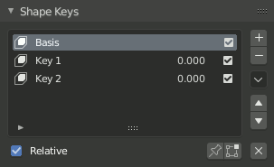

形态键面板¶
参考
- 编辑器
属性编辑器
- 模式
所有模式
- 面板

形态键面板。¶
设置¶
- 活动的形态键索引
一个 列表视图 。
- 值
当前形态键的值（0.0到1.0）。
- 哑的（眼睛的图标）
是形态键在3D View中不可见。
- 特殊的
- 迁移形态键
迁移活动的形态键到另一个物体上。选择两个物体，把活动的形态键拷贝到活动物体上。
- 连接为形状
从另一个物体迁移 当前形状 。选择两个物体，把形状拷贝到活动物体上。
- 镜像形态键
如果网格均匀且对称，在 物体模式 下，可以沿X轴镜像形态键。除非网格是对称的，否则不能使用这种方法。如果使用，可以在编辑模式下选择 。
- 镜像形态键（拓扑）
同 镜像形态键 类似，但是它根据网格的拓扑检测镜像顶点。这种情况下，网格的顶点不用完全对称也可以。
- 创建新的形态键
用当前变形物体的添加新的形态键。
- 删除所有形态键
删除所有的形态键。
- 相对的
设置形态键为 相对的 或 绝对的 。
- 仅显示（别针形的图标）
在3D View中显示形态键但不进行插值。在编辑模式下，仅显示选项自动勾选，除非下面的设置项被打开。
- 编辑模式
在 编辑模式 下更改形态键。